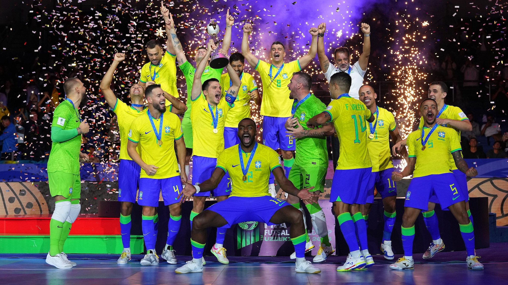

Meu primeiro post
Por: André
Boas-vindas ao meu novo blog! Aqui vou compartilhar um pouco sore minha vida e algumas cuiosidades interessantes.
Vou compartilhar um pouco sobre mnha vida e sobre algumas curiosidades
Por: André
Boas-vindas ao meu novo blog! Aqui vou compartilhar um pouco sore minha vida e algumas cuiosidades interessantes.
Por: André
Boas-vindas ao meu novo blog! Aqui vou compartilhar dicas de programação e curiosidades da área de tecnologia.


Por: André
Você sabia que o futsal surgiu na América do Sul? A modalidade foi criada no Uruguai, na década de 1930, e rapidamente se espalhou por outros países, especialmente pelo Brasil. Por ser jogado em uma quadra menor e com uma bola que quica menos, o futsal exige muita habilidade, velocidade e precisão dos jogadores..
Por: André
Você sabia que o Brasil é o único país que participou de todas as edições da Copa do Mundo? Desde a primeira competição, em 1930, a Seleção Brasileira esteve presente em todos os torneios e também é a maior campeã da história, com cinco títulos mundiais.